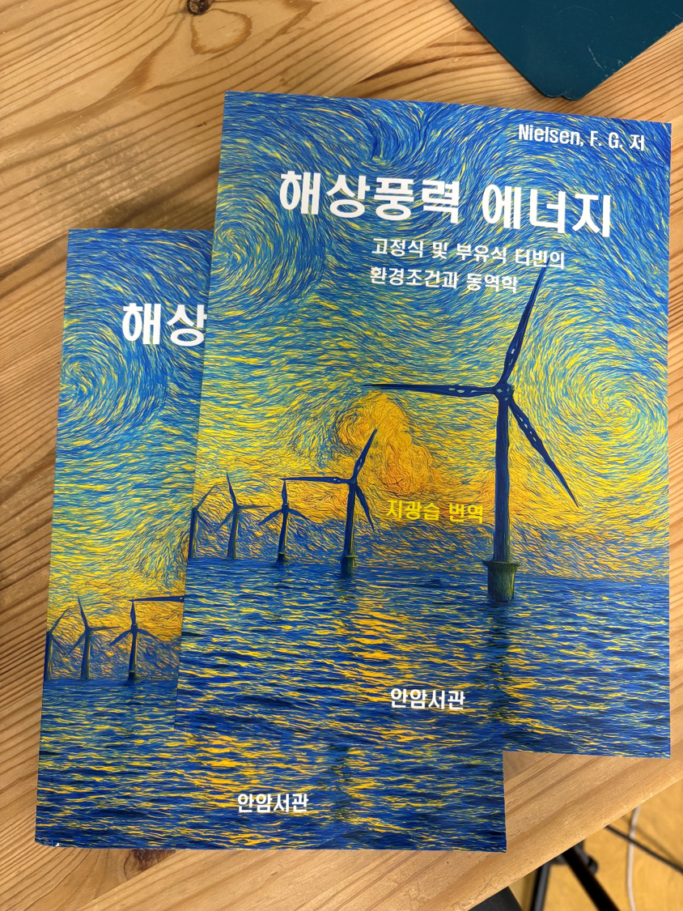
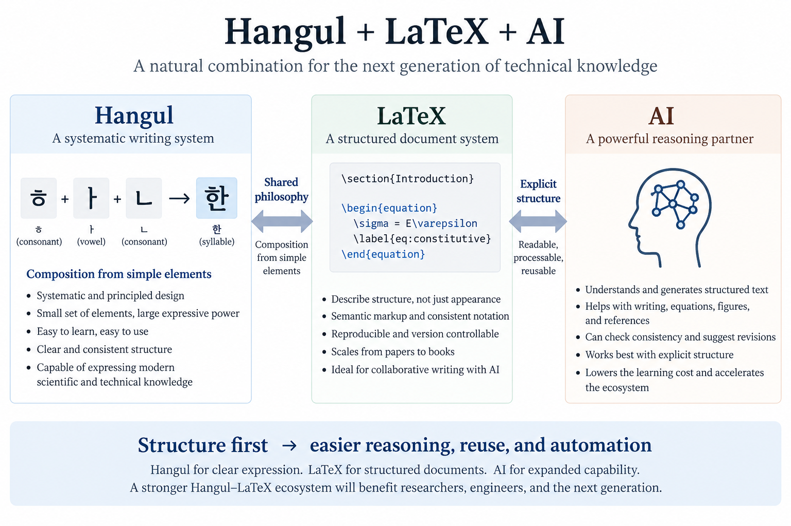

Why Hangul and LaTeX Belong Together in the AI Era
A systematic writing system, a structured document system, and an ecosystem we still need to build
Hangul LaTeX, Korean LaTeX, LaTeX Korean, Korean typesetting, LaTeX Korean textbook, LaTeX technical writing, LaTeX scientific writing, AI LaTeX, AI technical writing, AI scientific writing, structured documents, structured technical writing, human AI writing, Korean LaTeX ecosystem, XeTeXko, LuaTeXko, ko.TeX
I recently published a Korean engineering textbook using LaTeX.
The book is my Korean translation of F. G. Nielsen’s 2024 Cambridge University Press textbook on offshore wind energy, written as an introductory text for engineers. The Korean edition has ISBN 9791199253803.

Preparing an entire engineering textbook is quite different from testing whether a few Korean sentences can be compiled in LaTeX. A textbook has chapters, equations, figures, tables, cross-references, citations, technical terminology, Korean and English text, and mathematical notation that must remain consistent over hundreds of pages.
After going through that process, I came away with a fairly simple conclusion:
Hangul works very well with LaTeX.
The remaining problem is not whether Hangul can be typeset in LaTeX. It is whether we have built a sufficiently rich Hangul-LaTeX ecosystem to make this way of writing accessible to everyone.
This becomes particularly interesting now because AI is changing the way we write.
My view is increasingly simple:
LaTeX may be a better document system in the AI era than it was before the AI era.
And Hangul may be particularly well suited to that environment.

Hangul is not just another set of characters
I have always regarded Hangul as an extraordinary writing system.
That statement can easily become patriotic rhetoric, so it is worth being more precise about what makes Hangul technically interesting.
The Hunminjeongeum manuscript published in 1446 contains the promulgation of the new alphabet as well as the Haerye, which explains its principles and gives examples. UNESCO registered the manuscript in the Memory of the World International Register in 1997.
That historical fact matters.
The system was not merely a collection of symbols to memorize. Its design principles were explicitly explained.
A Korean syllable such as
\[ \text{한} \]
is not an indivisible graphical object.
It is composed from
\[ \text{ㅎ} + \text{ㅏ} + \text{ㄴ}. \]
There are therefore several levels of structure:
\[ \boxed{ \text{basic elements} \rightarrow \text{letters} \rightarrow \text{syllable blocks} \rightarrow \text{words} } \]
The visible syllable is compact, but its internal structure remains systematic.
Hangul is visually block-based while remaining compositionally alphabetic.
For me, that is one reason Hangul feels surprisingly modern.
A writing system built from rules
The important point is not simply that Hangul is easy to learn.
Its deeper strength is that a relatively small number of elements and rules generate a very large expressive space.
That is a familiar idea to engineers.
We do not want to memorize the solution of every possible structure. We want a small number of governing principles from which the solutions can be constructed.
In mechanics, for example,
\[ \text{equilibrium} + \text{compatibility} + \text{constitutive behavior} \]
can generate the response of an enormous range of structural systems.
A good system compresses complexity into rules.
Hangul does something analogous at a completely different level.
It does not require a unique symbol for every possible syllable. A finite set of elements can be systematically composed.
That is why I hesitate to describe Hangul merely as “convenient.”
Its beauty is structural.
LaTeX works in a surprisingly similar way
Now consider LaTeX.
A conventional word processor encourages us to work directly on the visible appearance of a document.
We select a title and make it larger. We select another line and make it bold. We adjust spacing. We move figures. We modify fonts.
The document gradually acquires its appearance through many local formatting decisions.
LaTeX encourages a different way of thinking.
Instead of saying,
Make this text 18 pt, bold, and put some space above it,
we say:
\section{Introduction}Instead of manually placing an equation number, we describe an equation:
\begin{equation}
\sigma = E\varepsilon
\end{equation}Instead of manually constructing every citation, we identify a bibliographic source and let the document system determine how it should appear.
The distinction is fundamental:
\[ \boxed{ \text{describe the structure} \neq \text{manually construct the appearance} } \]
LaTeX is therefore not merely a typesetting tool.
It is a structured document system.
But LaTeX used to have a serious disadvantage
There is an obvious objection.
LaTeX has always been powerful. Why, then, has everyone not been using it?
Because LaTeX makes the writer specify structure explicitly.
That has a cost.
You need to learn commands. You encounter compilation errors. You have to understand packages. You sometimes spend half an hour discovering that one missing brace caused the problem.
Anyone who has used LaTeX seriously knows this experience.
A word processor hides much of this complexity behind graphical interfaces.
For many users, that was a decisive advantage.
The traditional trade-off was roughly:
| Conventional word processor | LaTeX |
|---|---|
| Easy immediate interaction | Explicit structure |
| Visual editing | Text-based editing |
| Low initial learning cost | Higher initial learning cost |
| Local formatting flexibility | Systematic reproducibility |
For decades, the learning cost of LaTeX was real.
Then AI arrived.
AI changes the economics of LaTeX
This is where I think something fundamental has changed.
Consider the following request:
Write the governing equation for linear elasticity, number it, refer to it in the following paragraph, and place the derivation in an appendix.
For an AI system, producing structured text such as
\begin{equation}
\boldsymbol{\sigma}
=
\mathbb{C}:\boldsymbol{\varepsilon}
\label{eq:constitutive}
\end{equation}is natural.
The AI can also generate
Equation~\eqref{eq:constitutive}and restructure sections, tables, equations, references, lists, and figure environments.
The output remains text.
That is important.
LaTeX source can be read by a human, generated by an AI, compared using Git, modified by a script, searched using ordinary text tools, and compiled reproducibly.
The document therefore becomes part of a computational workflow.
What used to be a weakness of LaTeX—
You have to tell the computer explicitly what the document means—
is becoming a strength.
AI is very good at helping us express that structure.
AI does not eliminate markup
One might imagine that sufficiently advanced AI will make markup languages unnecessary.
Perhaps we will simply say:
Make this into a book.
And AI will do everything.
That will certainly become easier.
But I do not think this makes explicit document structure less valuable.
It may make it more valuable.
Suppose an AI modifies a 300-page technical book.
What do I want to know?
I want to know:
- which equations changed,
- which references changed,
- whether a section was deleted,
- whether figure numbering remains consistent,
- whether symbols are used consistently,
- whether a bibliography entry was altered,
- and whether the document can be reproduced tomorrow.
A structured text representation makes these questions much easier to answer.
The issue is no longer:
Can AI make a beautiful document?
Of course it can.
The more important question is:
Can humans and AI maintain a large technical document together without losing control of its structure?
That is a different problem.
And it is exactly the kind of problem for which LaTeX is well suited.
LaTeX source is becoming an interface between humans and AI
This leads to a way of thinking about LaTeX that I did not have twenty years ago.
The .tex file is not merely source code for producing a PDF.
It can become an interface between the human author and the AI.
The human can say:
This is a theorem.
This is an equation.
This is a figure.
This is a citation.
This is a chapter.
This symbol means stress.
The AI can operate on those explicit structures.
The compiler can then turn them into a finished document.
Schematically,
\[ \boxed{ \text{human reasoning} \leftrightarrow \text{AI} \leftrightarrow \text{structured source} \rightarrow \text{LaTeX} \rightarrow \text{document} } \]
This is very different from treating a document as a collection of pixels on a page.
For scientific and engineering writing, that difference matters.
Then why is Korean LaTeX still difficult?
Technically, writing Korean in LaTeX is no longer an exotic task.
CTAN currently lists a substantial Korean typesetting ecosystem, including kotex-utf, kotex-oblivoir, LuaTeXko, XeTeXko, and related packages. kotex-oblivoir, for example, is a Korean document class based on memoir, and Korean LaTeX introductory documentation is also available.
I have just published a Korean book this way.
So the main problem is no longer:
Can LaTeX print Hangul?
It can.
The more relevant question is:
How much accumulated infrastructure exists around the person trying to do it?
Here the difference between English and Korean remains substantial.
If I encounter an obscure LaTeX problem in English, there is a good chance that someone has already encountered it.
There may be documentation, a Stack Exchange discussion, a package example, a university template, a journal class, a GitHub repository, a textbook, or a twenty-year-old mailing-list answer that still solves the problem.
That accumulated knowledge is an ecosystem.
Korean LaTeX has strong technical foundations, but its surrounding ecosystem can still be made much richer.
Technical capability is not the same as an ecosystem
This distinction is important.
A technology may work perfectly and still be difficult to adopt.
Suppose a Korean graduate student wants to write a thesis in LaTeX.
The student does not merely need Hangul characters to appear correctly.
The student needs:
- a working thesis template,
- Korean and English font handling,
- bibliography examples,
- figure and table conventions,
- Korean indexing,
- PDF bookmarks,
- cross-references,
- equation conventions,
- university-specific formatting,
- examples that compile without modification,
- troubleshooting information,
- and preferably an explanation in Korean.
For a professor writing a textbook, the requirements are different again.
For a society publishing a journal, they are different again.
For engineers producing technical reports, still different.
An ecosystem emerges when these solutions do not have to be reinvented independently by every user.
What should a Hangul-LaTeX ecosystem contain?
I think we should deliberately build such an ecosystem.
Not one enormous software project.
Many small, reusable pieces.
Korean-first templates
We need high-quality templates for:
- textbooks,
- university theses,
- lecture notes,
- technical reports,
- research proposals,
- journal articles,
- conference proceedings,
- presentation slides,
- and engineering calculation documents.
They should not merely demonstrate that Korean characters compile.
They should demonstrate good Korean technical typography.
Reproducible examples
A useful example should be something a new user can download and compile immediately.
Not:
Here are fragments from my preamble.
Good luck.but:
example/
├── main.tex
├── references.bib
├── figures/
└── README.mdwith a known compiler and a known result.
Korean documentation
English documentation will always remain important.
But if we want Korean students and engineers to adopt LaTeX widely, the first ten minutes should not require deciphering English package documentation.
The basic workflow should be explainable naturally in Korean.
Font and typography guidance
Hangul typography is not simply Latin typography with Korean glyphs substituted.
Good defaults matter.
Users should not have to rediscover independently how Korean and Latin fonts interact, how line breaking behaves, how mathematical notation sits beside Korean text, or how headings and captions should be designed.
AI-ready workflows
This is the new part.
We should provide examples showing how AI can safely assist with:
- generating LaTeX,
- correcting compilation errors,
- restructuring chapters,
- managing references,
- checking notation,
- producing tables,
- converting equations,
- reviewing cross-references,
- and maintaining large documents.
The goal is not to let AI blindly rewrite a book.
The goal is to make the document structure sufficiently explicit that AI assistance remains inspectable.
There is a positive feedback loop
Something interesting happens here.
Historically, building the ecosystem required experts to spend considerable time writing documentation, examples, templates, and answers.
AI lowers that cost.
A LaTeX expert can now create a minimal template and ask AI to help generate documentation, examples, alternative configurations, explanations for beginners, troubleshooting guides, and translations.
These outputs still require expert verification.
But the cost of producing them is dramatically reduced.
So we have a positive feedback loop:
\[ \boxed{ \begin{aligned} \text{better Hangul-LaTeX ecosystem} &\rightarrow \text{more users} \\ &\rightarrow \text{more examples and knowledge} \\ &\rightarrow \text{better AI assistance} \\ &\rightarrow \text{lower adoption cost} \\ &\rightarrow \text{more users}. \end{aligned} } \]
This may be the best time we have ever had to build the ecosystem.
The source itself becomes knowledge
There is another reason this matters for universities and research groups.
A well-structured LaTeX repository contains more than prose.
It contains relationships.
For example:
\section{Creep}
\begin{equation}
J(t,t')
=
\cdots
\label{eq:compliance}
\end{equation}and elsewhere:
As shown by Equation~\eqref{eq:compliance}, ...Figures, equations, references, sections, definitions, and citations are explicitly connected.
That makes the source potentially useful for much more than typesetting.
It can support:
- semantic search,
- knowledge extraction,
- automated consistency checking,
- educational content generation,
- document comparison,
- retrieval-augmented generation,
- and eventually richer knowledge graphs.
The document is no longer merely the final product.
Its structured source becomes a reusable knowledge asset.
For universities, laboratories, standards organizations, and technical societies, this is potentially very important.
Hangul deserves a first-class technical writing environment
There is also a broader cultural point.
A language should not have to retreat to English whenever the subject becomes mathematically or technically sophisticated.
We should be able to write naturally in Korean while using
\[ \nabla\cdot\boldsymbol{\sigma}+\boldsymbol{b}=0, \]
derive equations,
\[ \delta W = \int_V \boldsymbol{\sigma}: \delta\boldsymbol{\varepsilon}\,dV, \]
cite international literature, write computer code, and produce a publication-quality book without treating Korean as an inconvenience that must somehow be accommodated.
Hangul is entirely capable of carrying sophisticated scientific and engineering reasoning.
The document environment surrounding it should be equally capable.
My experience publishing a book
Publishing a Korean book with LaTeX convinced me that the fundamental technical problem has already been solved.
Hangul and LaTeX work together.
What remains is largely an ecosystem problem.
And ecosystem problems are solvable.
They are solved by accumulated examples, templates, conventions, documentation, tools, and communities.
No individual contribution has to be enormous.
A good thesis template helps.
A reliable book template helps.
A clear explanation of Korean font configuration helps.
A GitHub repository that actually compiles helps.
A Korean answer to a difficult LaTeX problem helps.
An AI workflow that has been tested on a real technical manuscript helps.
Each contribution reduces the cost for the next person.
Perhaps LaTeX arrived too early
There is an irony here.
LaTeX has existed for decades.
Its basic philosophy—separating content and structure from presentation—was always powerful.
But for ordinary users, expressing that structure explicitly required effort.
AI removes a significant part of that burden.
Perhaps LaTeX did not become obsolete.
Perhaps the environment finally caught up with its design philosophy.
A human no longer has to remember every command.
We can concentrate increasingly on questions such as:
What is this object?
Is it an equation, definition, theorem, figure, citation, or section?
How is it related to the rest of the argument?
Once those relationships are expressed explicitly, both the computer and the AI can do much of the mechanical work.
That is precisely where structured document systems become powerful.
Structure becomes more valuable in the AI era
The common prediction is that AI will make document systems less important.
I think the opposite may be true.
As AI generates more text, more equations, more figures, more code, and larger documents, we will need stronger structure to keep control of what is being generated.
For scientific and engineering documents, that means explicit equations, references, labels, bibliographies, sections, figures, and source histories.
LaTeX already thinks this way.
Hangul, from a very different historical origin, also embodies an unusually systematic approach to constructing written language.
That is why I believe they belong together.
Not because Hangul needs LaTeX in order to survive.
And not because LaTeX needs Hangul.
But because both remind us of the same powerful idea:
Complexity becomes manageable when it is built from understandable elements according to explicit rules.
In the AI era, that principle becomes more important, not less.
We already have Hangul.
We already have LaTeX.
We already have AI.
What we still need to build is the ecosystem that allows the three to work together naturally.
Further reading
- UNESCO, Hunminjeongum Manuscript, Memory of the World International Register: https://www.unesco.org/en/memory-world/hunminjeongum-manuscript
- CTAN, Korean-language typesetting packages: https://www.ctan.org/topic/korean
- CTAN,
kotex-oblivoir: https://ctan.org/pkg/kotex-oblivoir - CTAN, The Not So Short Introduction to LaTeX — Korean edition: https://ctan.org/pkg/lshort-korean